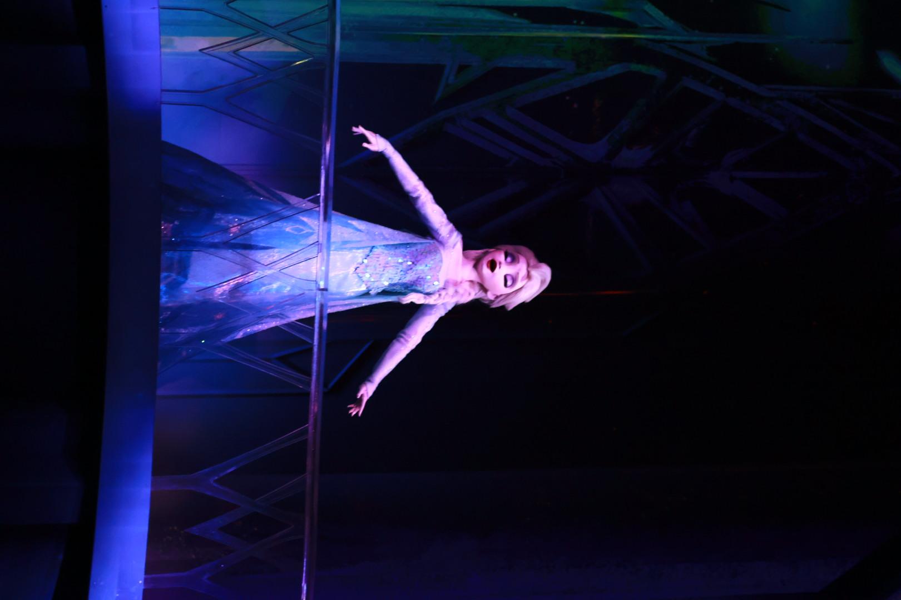
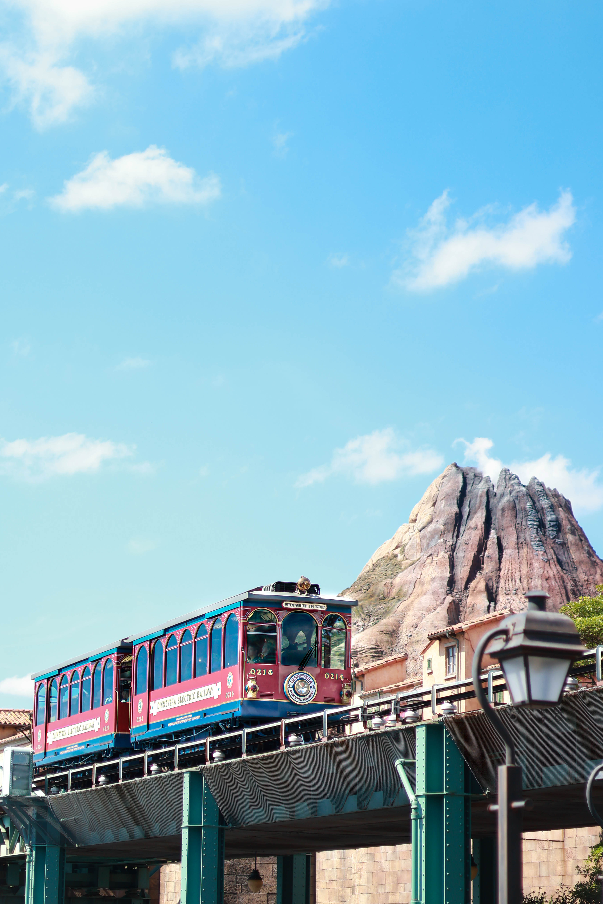

Trail
2025/10/22 トロン：アレス
ようやく『トロン：アレス』を観てきた。
『トロン』は私の一番好きな作品であり、私の創作に大きな影響を与えた。
志望理由書に書くくらいである。
ここからは、私の感想と考察を書く。
ネタバレを含む可能性があるので、読み進めるのは自己責任で頼むぜ。
ただ一つ言えるのは、今作は賛否両論あるようだが、過去作をこよなく愛している私は本当にいい作品だと感じた。
まだ観ていない人は、ぜひ観てほしい。
目次：
・不完全について
・関係性について
・デザインについて
・その他の考察
【 不完全について 】
ディレンジャー・グリッドのマスターコントロールであったアレスは、ユーザーであるジュリアン・ディリンジャーの命令に背いた。
彼は、自分の目的のために自分で決定し、行動をした。
プログラムである彼にとって、ユーザーの命令に背く行為は、自我や感情の発生だと言える。
彼に自我・感情が芽生え始めたのは、ジュリアンによる「イヴを捕らえるために、彼女の情報を取って来い」という命令からだった。
イヴの人となりに触れ、感情というものを理解した。
また、アレスが初めて人間界に出力されたとき、雨が降っていた。
グリッド内では感じることのない“雨”に触れ、何かを感じたのは初めてだった。
このような経験から、アレスに自我や感情が発生したのだろう。
同じディリンジャー社製の警備プログラムであるアテナは、感情を理解できなかった。
それは、アテナが完璧で正確に指示を実行するプログラムだからだ。
アテナは、危険で愚かなジュリアンの命令を疑問も持たずに実行しようとした。
ジュリアンの命令を「完璧」にこなそうとするアテナと、命令に背き、自ら考えて行動した「不完全」なアレス。
二人は対照的に描かれていた。
29分しか生きられない。何個も変わりがいる。
そんなアレスが人間になりたいと願うようになったのは、彼が「不完全」であるからだろう。
アレスは、好きな理由を説明するときに、言葉にできず「感じる」と言った。
だから、ケヴィン・フリンは永続コードを渡したのだ。
完璧を求めれば求めるほど、「機械的」になり、「人間」から遠ざかっていく。
だからこそ、“不完全”であることは欠陥ではなく、進化のはじまりなのだ。
【 関係性について 】
よくある物語では、男女のペアが登場すれば、だいたい恋に落ちて終わる。
前作『レガシー』もそうだった。
しかし今作のアレスとイヴは、恋愛ではなく“友情”のまま物語を終えた。
アレスとイヴは、ジュディとニックのように、信頼で結ばれた最高のバディだ。
最初は、お互いの利益のために一緒にいたにすぎない。
イヴは生き残るために。アレスは永続コードを手に入れるために。
だけど物語が進むにつれて、アレスは自分を犠牲にしてでもイヴを守ろうとする。
それは、目的の一致ではなく、信頼関係に変わった証拠だと思う。
恋愛ではなく友情で終わる物語は、最近では珍しい。
けれど、その“距離感の美しさ”こそ、アレスとイヴの関係の魅力だった。
プログラムと人間の間に生まれたのは「愛」でも「主従」でもなく、「信頼」だった。
【 デザインについて 】
今作のディリンジャー社のプログラムのアーマーは赤だった。
前作では、クルーが薄いオレンジ、リンズラー（トロン）が濃いオレンジ、ユーザーが白、ユーザーを信じるプログラムは水色。
つまり、暖色のアーマーは“ヴィラン側”を表していたことがわかる。
アレスが永続コードを手に入れた瞬間、彼のアーマーは白に変わる。
その瞬間、私は号泣した。
あのシーンは、本当の意味で「人間になった」瞬間なのだ。
永続コードは29分という制限をなくすが、永遠の命を与えるわけではない。
ケヴィンは「永続コード」と名付けたが、「永遠ではない」と言った。
それはつまり、人間と同じ“有限の命”を意味していた。
プログラムを“人間にする”ということだ。
ケヴィンはすでに亡くなっていたが、サーバーの中にたった二行の螺旋状のコードを残していた。
アレスに対して “You’re the man.” と彼は言った。
ケヴィンにとっての「最高」とは、“完璧”ではなく“人間的な不完全”だったのだと思う。
ISOと同じように。
ただ、一つだけ気がかりなことがある。
グリッドのデザインについてだ。
多分、理解不足なだけだと思うので、観直したい。
疑問が解けたら、加筆したいと思う。
【 その他の考察 】
今回、この映画を観て考えさせられたのは、AIのシンギュラリティの到達についてだ。
シンギュラリティとは、AIが人間と同じように考え、自ら行動する知能を手に入れ、やがて人間を超越する地点のことを指す。
私は、遅かれ早かれAIがその点に到達する日は必ず来ると思っている。
実際、近年のAIの成長は目まぐるしく、もはや「AIを使わない生活」は想像できないほどだ。
4年前の私は、AIにプログラムを書いてもらったり、課題を手伝ってもらったり、わからないことをGoogleではなくAIに聞くようになるなんて、考えもしなかった。
一部の人は、AIが人間の仕事を奪い、やがて世界を支配するのではないかと危惧している。
けれど、技術というのはいつの時代も、平和のために作られたものが武器になってしまうことがある。
包丁も、ダイナマイトも、使う人の手によって意味が変わる。
AIも同じだ。
それが何を生むかは、私たちユーザーがどのように使うかにかかっている。
私はAIが進化と共に、これからの人間の暮らしをもっと豊かにすると信じている。
医療の発展、教育の強化をはじめ、あらゆる分野でだ。
AIの暴走を防ぐには、私たちがAIに“何を学ばせるか”が大切になる。
AIが「感情」を手に入れるまでは、それが人間の持つ最後の理解できない部分なのかもしれない。
でも、いつかAIが“感じる”ことを学ぶ日が来るだろう。
そのとき、きっと未来のAIも、アレスのように「感じる存在」になる。
私はそんな未来が楽しみだ。
I finally watched TRON: Ares.
TRON is my favorite movie series, and it has given me a big influence on my own creations.
I even wrote about it in my university application essay.
From here, I will write my thoughts and opinions.
This includes some spoilers, so please read at your own risk.
Many people have different opinions about this movie, but as a big fan of the old works, I really think this one is great.
If you haven’t seen it yet, please watch it.
Contents:
・About Imperfection
・About Relationships
・About Design
・Other Thoughts
[ About Imperfection ]
Ares, the master control of the Dillinger Grid, disobeyed the order of his user, Julian Dillinger.
He decided and acted by himself for his own purpose.
For a program, going against a user’s order means that he started to have a mind and emotions.
This started when Julian told him, “Catch Eve and bring back her data.”
By learning about Eve’s personality, Ares began to understand feelings.
When he came to the human world for the first time, it was raining.
There is no rain inside the Grid, so it was his first time to feel something like that.
From this experience, Ares began to have his own heart and emotions.
Athena, another security program made by Dillinger, could not understand emotions.
She was made to follow orders perfectly and exactly.
Athena followed Julian’s dangerous orders without any questions.
Athena, who tried to be perfect, and Ares, who thought and acted by himself, were shown as opposites.
He could live only for 29 minutes. There were many copies of him.
Because of that, Ares wanted to become human. He wanted to feel something real.
When he tried to explain why he liked something, he couldn’t say it in words. He just said, “I feel it.”
That is probably why Kevin Flynn gave him the “Perpetual Code.”
The more you try to be perfect, the more machine-like you become, and the further you go from being human.
So being “imperfect” is not a problem—it is the start of becoming something new.
[ About Relationships ]
In many stories, when a man and a woman appear together, they usually fall in love at the end.
The last movie, TRON: Legacy, was also like that.
But in this movie, Ares and Eve finished their story as friends, not lovers.
Ares and Eve were great partners who trusted each other, like Judy and Nick.
At first, they were together only for their own goals.
Eve wanted to survive, and Ares wanted to get the Perpetual Code.
But later, Ares tried to protect Eve, even if it meant risking his life.
That showed their relationship had changed from a deal to real trust.
It is rare for a story to end with friendship instead of love.
But that distance between them was beautiful.
Between a program and a human, what was born was not love or control, but trust.
[ About Design ]
In this movie, the programs of Dillinger Corp wore red armor.
In the last movie, crew members wore light orange, Rinzler (TRON) wore dark orange, users wore white, and programs who believed in users wore blue.
So warm colors like orange and red showed the “villain side.”
When Ares got the Perpetual Code, his armor turned white.
At that moment, I cried. That was the moment he truly became “human.”
The Perpetual Code removes the 29-minute limit but does not give eternal life.
Kevin named it “Perpetual,” but he said, “It is not forever.”
That means Ares got a life that ends, just like humans.
It made a program closer to being human.
Kevin had already died, but he left two lines of spiral code in the server.
Before giving it to Ares, he said, “You’re the man.”
To Kevin, the best thing was not being perfect—it was being imperfect and human.
Just like the ISOs.
There is one thing that still makes me wonder: the design of the Grid.
Maybe I just didn’t understand it well, so I want to watch the movie again.
When I understand it, I want to write more here.
[ Other Thoughts ]
This movie made me think about the “Singularity” of AI.
It means the time when AI can think and act like humans, and finally go beyond human intelligence.
I think that day will come someday.
Recently, AI has grown so fast that I can’t imagine my life without it.
Four years ago, I never thought I would ask AI to write programs for me, help me with homework, or ask AI instead of Google.
Some people are afraid that AI will take our jobs or control the world.
But in history, technology made for peace sometimes became a weapon.
A knife or dynamite can save people or hurt them. It depends on how people use it.
AI is the same. It depends on how we, the users, use it.
I believe AI will make our lives better as it grows.
In medicine, in education, and in many other fields.
To stop AI from going out of control, it is important what we teach it and let it learn.
Until AI gets “emotions,” that will be the only part of humans it cannot fully understand.
But someday, AI will learn how to “feel.”
When that day comes, future AI will be like Ares—a being that can feel.
I am looking forward to that future.
2025/09/24 海インレポ
2025/09/24 My Day at DisneySea






BBBのために、半年ぶりに海インしてきた。よく半年も我慢できたよな…笑
大学入試の面接うまくいかなくて、落ち込んでたら、友だちがチケット取ってくれたよ。優しい。
BBBが終わる前に、もう1回見に行きたかったんだけど、エントリーも落ちて、DPAも売り切れて見れなかった。
ちなみに他のエントリーも全落ちだった。
でも、ブロードウェイ・ミュージックシアターの写真撮れて大満足ですわよ。(写真の出来はイマイチだったけど)
19年間も素晴らしい舞台を続けてくれた、演者のみんなや作曲家さんたち、キャストさん、OLCには頭が上がらないね;;
本当にBBBを円盤化してくれ。
ちょうどDハロ期間だったから、ハバグリしっかり撮ってきました。
安定のデイジーの可愛さ。眼福すぎて、語彙力の崩壊。
今回は(も) 、5つくらいしかアトラクションに乗ってない。たまたまアナ雪のDPAが取れたから、ファンスプの方まで行ってきた。
ついでに、前回上手く撮れなかった魔法の花のリベンジしてきたよ。そこそこの出来で嬉しい。
そして、しっかり写活もしてきましたわよ！
一緒に行った友だちが鉄オタってこともあって(?)、エレクトリックレールウェイをたくさん撮った。
被写体としても、交通手段としても素晴らしい。最高です。
乗ってるゲストと歩いてるゲストが手を振る文化、本当に素敵すぎて大好き。
海はどこを切り取っても、素敵な空間が広がってるよなと改めて実感した。
ちゃんとシンドバッドも行けて、久々にトイマニ乗って、海底探索して、海底練り歩いて、美味しいご飯食べて……
めちゃめちゃ、充実した1日だった。
次こそは、陸インしてデイジーに大学合格の報告に行きたい。
I went to DisneySea for BBB after half a year. I can't believe I waited that long... lol
I was feeling sad because my university interview didn't go well, but my friend got me a ticket. He's really kind.
I wanted to see BBB one more time before it ended, but I couldn't get any lottery tickets and DPA was sold out.
I lost all the other lotteries too.
But I'm happy because I could take photos of the Broadway Music Theatre. (The photos were just okay though)
I'm really grateful to everyone who continued this amazing show for 19 years ;;
I hope they will release BBB on DVD or Blu-ray.
It was Disney Halloween, so I took many photos during the harbor greeting.
In the harbor greeting, characters come on boats to meet guests. It was the Halloween show.
Daisy was so cute as always. She was so cute that I couldn't find words to describe her.
I only rode about 5 attractions this time (again). I got DPA for Frozen, so I went to Fantasy Springs.
I also took photos of the magic flower again because they didn't turn out well last time. This time they were pretty good.
I took lots of photos!
My friend is a train otaku (?), so we took many photos of the Electric Railway.
It's great to ride and to photograph. I love it.
I love how people on the train and people walking wave to each other. It's so nice.
I realized again that DisneySea is beautiful everywhere.
I went to Sindbad, rode Toy Story Mania for the first time in a while, rode 20,000 Leagues Under the Sea, walked around Mermaid Lagoon, ate delicious food...
It was a really wonderful day.
Next time, I want to go to Disneyland and tell Daisy that I got into university.
2025/06/13 少女☆歌劇 レヴュースタァライト -The STAGE 中等部- Rerise
2025/06/13 Revue Starlight -The STAGE Siegfeld Institute of Music Junior High- Rerise


Reriseを観に行った。
ロマーナもシークフェルトも超絶格好良かった。
特に、詩呂ちゃんとステラちゃんの礼式のレヴューで、2人の関係性が主人と従者から友人に変わったところでボロ泣きした。
あと、みんなの口上が成長した言葉になってて感動した。
詩呂ちゃん＆ステラちゃん vs 直江春歌＆荒神尊のレヴューも圧巻だった。泣きすぎて目が痛い。
ロマーナだと、曽我吾妻が好きすぎる。ロマーナのすごいところは、レヴュー服はほとんど変わらない、武器はみんな同じ、ダンスは全員全く同じ動きをするのに、立ち方や殺陣からどこか個性を感じるところだと思う。
統制が取れすぎている動きをしているのにも関わらず、キャラの性格に強すぎるほどの癖があって、それがロマーナ全体の魅力だ。流石に格好が良すぎるだろって。
でも、シークフェルトの立ち方、歌い方、殺陣、踊り方全てにキャラが出まくってるのももちろん大好き。
今回、舞台は初めて観たけど、すごくよかった。クソ寒いし、急に音鳴るし、びっくりしたけどwww
観に行って本当によかった。みんく好きになりすぎて、買う予定なかったアクスタ買っちまったぜwww
詩呂ちゃんとみんくのアクスタを持って、明日のGTEC頑張ろうと思う。
あと、さいかわ先生と結婚したい
I went to watch "Rerise".
Siegfeld and Romana were both super cool.
I completely broke down crying during Shiro & Stella's revue.
That scene changed their relationship from master and servant to besties.
And everyone's signature lines had grown and changed, and it made me so emotional.
The revue "Shiro & Stella vs. Haruka Naoe & Mikoto Aragami" was amazing. My eyes actually hurt from crying so much.
I really love Azuma Soga from Romana.
What’s great about Romana is that they all wear the same outfits, use the same weapons, and dance the same way, but we can still feel each character’s personality in how they stand and fight.
Even with perfect teamwork, their unique styles come through. That’s what makes Romana so cool.
And of course, I love how the Siegfeld members show their own styles when they sing, fight, and dance too.
This was my first time watching a stage play, and it was really good.
I was freezing the whole time, and the sound effects were loud and scary sometimes lol.
But I’m so happy I went.
I liked Minku so much that I bought her acrylic stand, even though I hadn’t planned to. LMAO
I’ll take my Shiro and Mink acrylic stands with me to do my best on the GTEC tomorrow.
Also, I want to marry Saikawa-sensei.